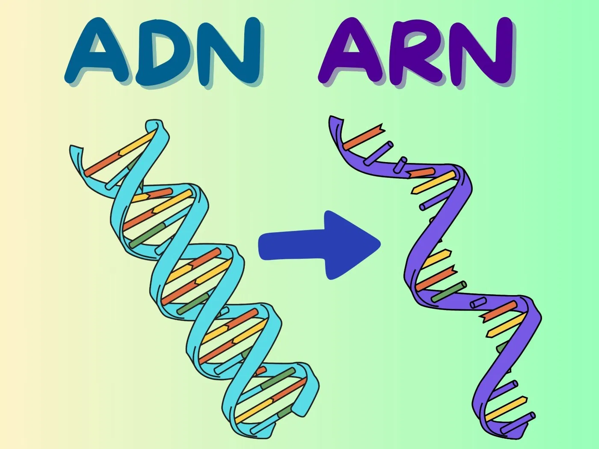
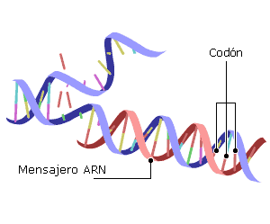

El ácido ribonucleico (ARN) es una molécula relacionada con el ADN, pero con funciones específicas en la transmisión y uso de la información genética. Actúa como mensajero que lleva las instrucciones desde el ADN hasta los ribosomas, donde se fabrican las proteínas; además, algunos tipos de ARN ayudan a ensamblar esos ladrillos (aminoácidos) y otros regulan qué genes se encienden o apagan en cada momento.
A diferencia del ADN, que se encuentra sobre todo en el núcleo y sirve como archivo “maestro”, el ARN se encuentra en núcleo, citoplasma y ribosomas. Su vida suele ser más corta que la del ADN, lo que permite a la célula responder rápido a cambios (por ejemplo, fabricar más o menos de una proteína según se necesite).
Estructura básica
Los nucleótidos del ARN están formados por:
Azúcar: ribosa.
Grupo fosfato: parte del esqueleto de la molécula.
Dato: Aunque el ARN suele ser monocatenario, en algunos virus actúa como material genético principal.
El ARN se organiza con enlaces fosfodiéster que le dan dirección 5’→3’. Aunque es de una sola hebra, puede plegarse sobre sí mismo y formar estructuras secundarias (como horquillas) que son esenciales para su función, especialmente en ARNt y ARNr.
Tipos principales de ARN
ARN mensajero (ARNm): lleva la información del ADN a los ribosomas. Contiene codones (grupos de 3 bases) que especifican aminoácidos. En eucariotas suele llevar un cap en 5′ y una cola de poli-A en 3′ para protegerlo.
ARN de transferencia (ARNt): transporta aminoácidos al ribosoma. Cada ARNt posee un anticodón complementario al codón del ARNm, asegurando que se incorpore el aminoácido correcto.
ARN ribosómico (ARNr): forma parte estructural y funcional de los ribosomas (la “fábrica” de proteínas). Cataliza la formación del enlace peptídico.
ARN no codificante: regula procesos celulares. Incluye miARN y siARN (silenciamiento génico), lncARN (regulación a largo alcance) y snoARN (modificación de otros ARN).
Del ADN al ARN: Transcripción
La transcripción es el proceso en el cual un gen del ADN se copia en una molécula de ARN. Ocurre en tres etapas: iniciación (la ARN polimerasa se une al promotor del gen y separa las hebras de ADN), elongación (va añadiendo ribonucleótidos complementarios a la hebra molde) y terminación (se libera el ARN recién sintetizado).
En células eucariotas, el ARN primario (pre-ARNm) sufre procesamiento: adición de cap 5′, cola de poli-A en 3′ y splicing para eliminar intrones y unir exones. Este ARNm maduro sale del núcleo hacia los ribosomas.

Traducción: del ARN a la proteína
En los ribosomas, el ARNm se lee en grupos de tres bases llamados codones. El proceso comienza con el codón de inicio (AUG), que codifica metionina; el ARNt correspondiente se une al ribosoma y, con la ayuda de otros ARNt, se van incorporando aminoácidos en el orden correcto.
La traducción progresa por los sitios A (entrada), P (peptidil) y E (salida). Cuando aparece un codón de terminación (UAA, UAG o UGA), el proceso se detiene y la proteína se libera para cumplir su función celular.

ARN y virus
Algunos virus, como el de la gripe o el SARS-CoV-2, usan ARN como material genético. En los virus de ARN de sentido positivo, su genoma puede actuar directamente como ARNm; en los de sentido negativo, primero debe copiarse a una hebra positiva. Los retrovirus (como VIH) tienen ARN pero usan una enzima llamada transcriptasa inversa para crear ADN a partir del ARN e integrarlo en el genoma de la célula.
Al replicarse con menos correcciones de errores que el ADN, los virus de ARN suelen presentar mayor variación, lo que favorece la aparición de variantes.
Tecnologías basadas en ARN
Vacunas de ARNm: inducen respuesta inmune. Entregan instrucciones temporales para que nuestras células produzcan una proteína del patógeno y así entrenar al sistema inmune.
ARN de interferencia (ARNi): bloquea genes específicos. Los siARN y miARN pueden silenciar la producción de proteínas asociadas a enfermedades.
Biología sintética: diseño de terapias basadas en ARN. Incluye guías de ARN en sistemas de edición genética, biosensores y circuitos reguladores programables.
Además, técnicas de laboratorio como la RT-PCR permiten detectar ARN específico (por ejemplo, de virus) convirtiéndolo primero en ADN complementario y amplificándolo para su análisis.
Importancia y aplicaciones
El ARN no es solo un intermediario entre el ADN y las proteínas, también regula procesos celulares claves (expresión génica), participa en el ensamblaje de ribosomas y sirve como herramienta en diagnóstico, biotecnología y medicina. Comprender el ARN ayuda a explicar cómo las células responden al ambiente, cómo se desarrollan ciertas enfermedades y cómo diseñar tratamientos modernos (por ejemplo, terapias basadas en ARNm o ARNi).